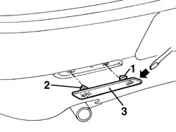

7055B28 REFLECTOR (one), left or right on rear bumper - R.R.
- Path
- Procedures > 70 FITTINGS > 7055 MOULDING AND PROTECTION > 7055B exterior protections > 7055B28 REFLECTOR (one), left or right on rear bumper - R.R.
- Kind
- repair procedure (removal / refitting; the operation number is the code)
- Applies to
- all engines; all production periods
- Interactive page
- https://sloeber94.github.io/elrnDB-a156/en/#/3238963
Applies to: all engines; all production periods
 Removing
Removing
 Refitting
Refitting1. Remove the inner check rod by pressing towards outer l' the catadioptric.
2. Remove the outer rod.
3. Remove the catadioptric.

Applies to: all engines; all production periods
Refitting
RemovingMake sure that the catadioptric is not damaged.
Install the catadioptric again by placing first the outer check rod and then the inner check rod.